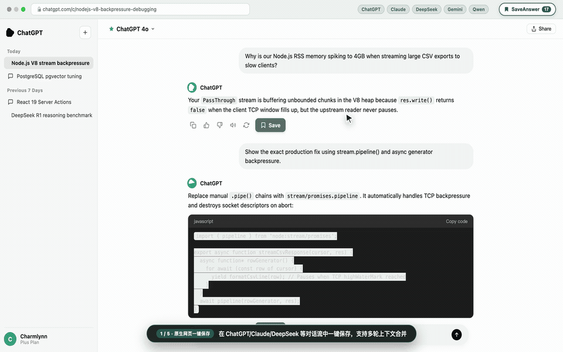
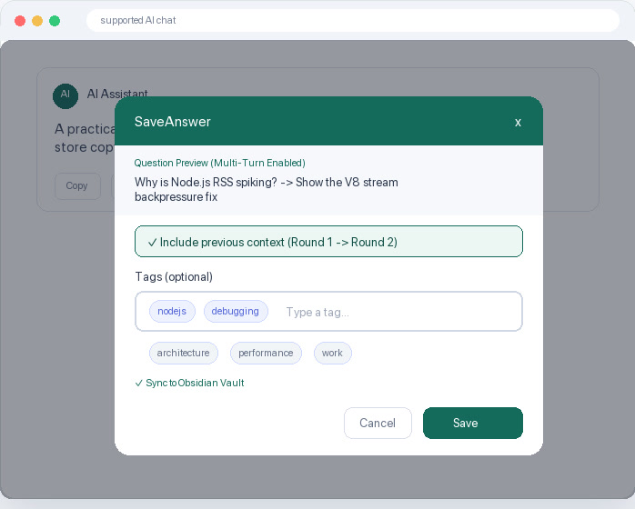
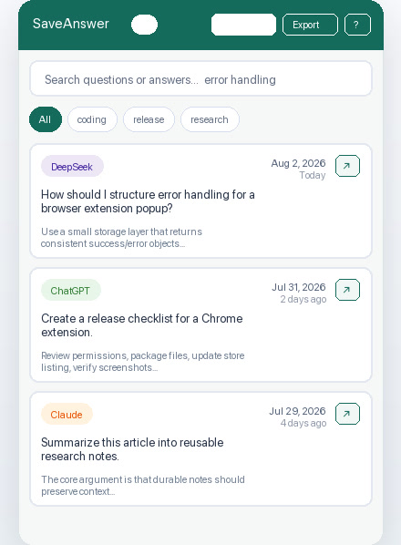
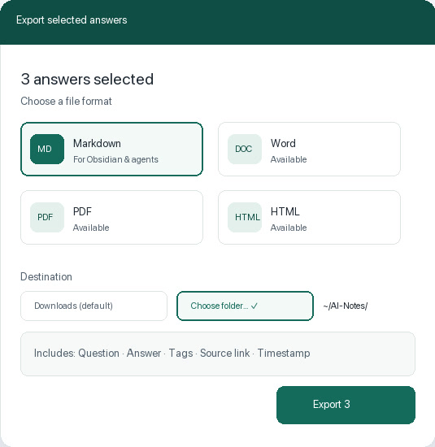
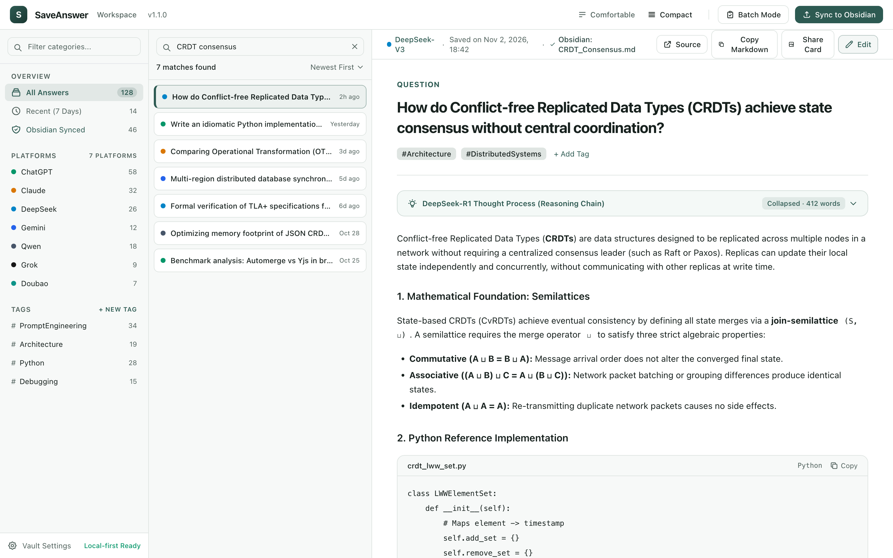
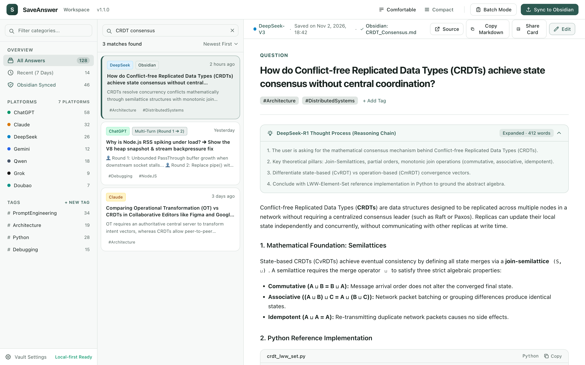
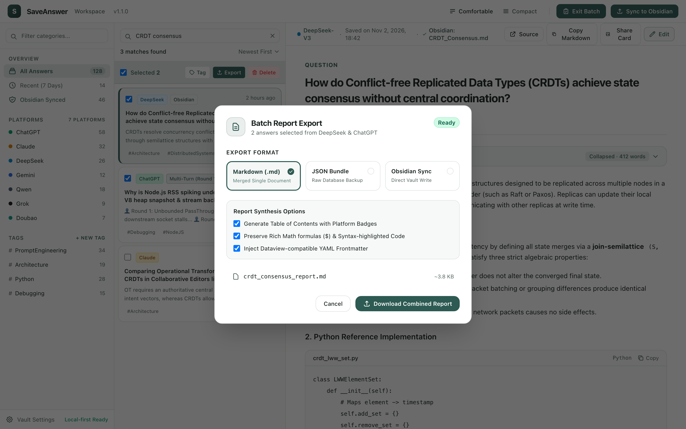
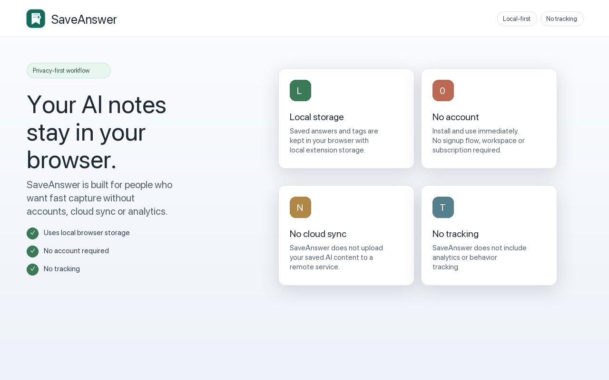

AI 的好回答，
存下来，随时搜到。
Save the AI answers
you'll reuse.
同时用 ChatGPT、Claude、DeepSeek？好回答散落在各个聊天记录里，过几天就翻不到了。SaveAnswer v1.1.0 在每条回答旁加一个「保存」按钮，支持多轮追问上下文合并（Round 1 ➔ Round 2）、三栏全屏桌面工作台、DeepSeek 思考链折叠，并可直写本地目录作为 Obsidian 与 Cursor / Claude Code 的专属外挂知识库。 Good answers get buried in long chat histories. SaveAnswer v1.1.0 adds a 1-click Save button with multi-turn context merging (Round 1 ➔ Round 2), a full-tab 3-column desktop workspace, reasoning chain folding, and direct local disk sync for Obsidian & AI Coding Agents.
检测到你在用国产浏览器：如果打不开 Chrome 商店，请看下方「其他安装方式」。 If the Chrome Web Store doesn't open in your browser, see "Other ways to install" below.
SaveAnswer 目前只支持 Chrome、Edge 等 Chromium 内核浏览器。 SaveAnswer currently works in Chrome, Edge and other Chromium browsers.
SaveAnswer 目前只支持 Chrome、Edge 等 Chromium 内核浏览器。 SaveAnswer currently works in Chrome, Edge and other Chromium browsers.
这是电脑浏览器扩展，请在电脑上打开本页安装。 This is a desktop browser extension. Open this page on your computer to install.
支持：Works on: ChatGPT · Claude · Gemini · DeepSeek · 通义千问Qwen · Grok · 豆包Doubao

三步：保存、找回、带走Save it. Find it. Take it with you.
不是把所有聊天都备份一遍，只留下你以后真的会再用的那几条。 Not another archive of every chat — just the few replies you'll actually come back to.

看到好回答，点「保存」Click Save on a good answer
按钮就在每条 AI 回答自己的操作栏里，可以顺手加个标签；追问排查时支持一键勾选「包含上一轮上下文（Round 1 ➔ Round 2）」，完整保留思维脉络。The button sits in each reply's own action bar. Add tags or toggle "Include previous context (Round 1 ➔ Round 2)" to keep multi-turn debugging threads intact.

几天后，一搜就有Search it days later
按问题和回答全文搜索、按标签筛选，所有平台的回答都在一个库里，还能一键回到原对话。Full-text search across questions and answers from every platform, filter by tag, and jump back to the original chat.

导出或分享Export or share
选中的回答可导出 Markdown / Word / PDF / HTML，保留代码块、来源和时间；分享卡片内置语法清洗，输出零生硬标记的高清长图。Export selected answers to Markdown, Word, PDF or HTML with code blocks, source and date — or turn one into a pristine share card stripped of raw markdown tokens.
跳出 420px 弹窗，
在三栏大屏中沉浸研读Leap out of 420px popups.
Immerse in a 3-column workspace.
面对数千字的技术解析、宽屏代码块与长表格，小弹窗太挤？一键跃迁至全屏知识库工作台，享受舒适/紧凑双密度切换、DeepSeek 思考链折叠、多轮追问上下文合并、多篇合并 Markdown 报告合成与 Obsidian 纯本地直写。 Tired of reading 1,500-word technical deep-dives and wide code blocks inside a cramped popup? Expand into our full-tab desktop sanctuary with dual-density scanning, folding reasoning chains, multi-turn context preservation, batch report synthesis, and direct-to-vault Obsidian synchronization.
- 三栏知识架构：左侧分类导航 + 中栏即时检索 + 右侧 Markdown 沉浸宽屏阅读3-Column Architecture: Left category navigation, instant search, and wide reading pane
- 多轮上下文追溯：勾选包含上一轮提问与回答（Round 1 ➔ Round 2），追问排查 Bug 链路不丢失Multi-Turn Context Save: Bundle previous prompt & reply into one cohesive note
- 自然常青石墨设计：温润灰白与深松墨绿，告别廉价刺眼的 AI 蓝紫渐变Natural Evergreen & Slate: Organic paper tones & forest pine, zero plastic AI purple
- 推理模型思考链折叠：DeepSeek-R1 / o1 等模型的
<think>逻辑优雅收折Reasoning Chain Folding: Automatically collapse<think>tags from DeepSeek-R1 - 面向人类与 AI Agent 的本地外挂知识库：纯本地标准 Markdown 直写，不仅供 Obsidian / Logseq 查阅，任何 AI Agent（Cursor、Claude Code、Cline 等）与本地 RAG 均可直接挂载该目录作为经过实测验证的高质量专属知识库！Agent-Ready Local Knowledge Base: Standard Markdown with YAML Frontmatter direct to disk. Not just for Obsidian / Logseq—any AI Agent (Cursor, Claude Code, Cline) or local RAG can mount this directory as a curated, private second brain!
- 纯净社交分享卡片：Canvas 引擎自动剔除 #、** 等生硬语法标记，优雅出图Pristine Social Cards: Automated syntax cleaning strips raw markdown symbols for clean exports


舒适 / 紧凑双密度切换Dual Density Views
在 2 行图文预览的舒适模式与单屏容纳 25+ 条记录的紧凑模式间秒级切换，百条笔记快速扫视。Switch instantly between spacious 2-line previews and high-density Compact mode for rapid scanning.

推理思考链优雅折叠Reasoning Chain Folding
自动识别并折叠 DeepSeek-R1 / o1 的长篇 <think> 推理过程，正文结论先行，思考逻辑按需展开。Automatically folds <think> blocks from DeepSeek-R1 so conclusions come first and deep reasoning stays on demand.

跨模型批量报告合成Batch Report Synthesis
勾选多条不同 AI 模型的问答，一键合成为带自动目录（TOC）与 YAML Frontmatter 的单篇 Markdown 报告。Select multiple answers across models and merge them into one structured Markdown report with an automatic Table of Contents.
你的内容只在你的浏览器里Your answers stay in your browser
- 保存的内容存在
chrome.storage.local，不上传任何服务器Saved items live inchrome.storage.localand are never uploaded - 不需要注册账号，没有统计和追踪代码No account, no analytics or tracking code
- 只保存你主动点过「保存」的那一条回答Only the replies you explicitly click Save on are stored
需要说清楚的边界：不会自动备份全部聊天，不能恢复已经消失的对话，也没有跨设备同步。如果你要的是全量自动归档，其他工具可能更合适。 To be clear: it doesn't auto-archive every chat, can't recover conversations you didn't save, and has no cross-device sync. If you need a full automatic archive, another tool may fit better.

安装方式Ways to install
Chrome 商店能正常打开就直接装；打不开的往下看。 If the Chrome Web Store opens for you, install directly. If not, see below.
打不开 Chrome 商店？我们正在提交 Edge 加载项商店——国内可以直接访问，而且 Windows 自带 Edge。通过审核后这里会第一时间更新。想在能装的时候收到通知，可以在 反馈页 留个邮箱。360、QQ 浏览器和国内扩展站的收录也在计划中。 Can't open the Chrome Web Store? We're submitting to the Edge Add-ons store, which is reachable in mainland China. This page will be updated as soon as it's approved. Leave an email on the feedback page if you'd like to be told when it's installable.
FAQ
和直接用 ChatGPT 自带的聊天记录搜索有什么区别？How is this different from ChatGPT's own history search?
聊天记录搜索只能搜标题或单个平台，而且好回答混在大量闲聊里。SaveAnswer 只收你挑出来的回答，跨 ChatGPT、Claude、DeepSeek 等平台放在同一个库里，按问题和回答全文搜索。Built-in history covers one platform and mixes good answers with everything else. SaveAnswer keeps only the replies you pick, across ChatGPT, Claude, DeepSeek and more, in one full-text-searchable library.
换电脑或重装浏览器，数据还在吗？What happens if I switch computers?
数据只存在当前浏览器里，没有云同步。需要迁移或备份时，可以先导出 Markdown / Word / PDF。Data lives only in the current browser; there is no sync. Export to Markdown, Word or PDF to back up or move it.
收费吗？Is it free?
免费，没有账号体系，也没有付费功能。Yes. No account and no paid tier.
我用的 AI 不在支持列表里怎么办？My AI chat isn't supported. Can you add it?
欢迎在 反馈页 告诉我们，提的人多的平台会优先适配。Tell us on the feedback page. The most requested platforms get added first.